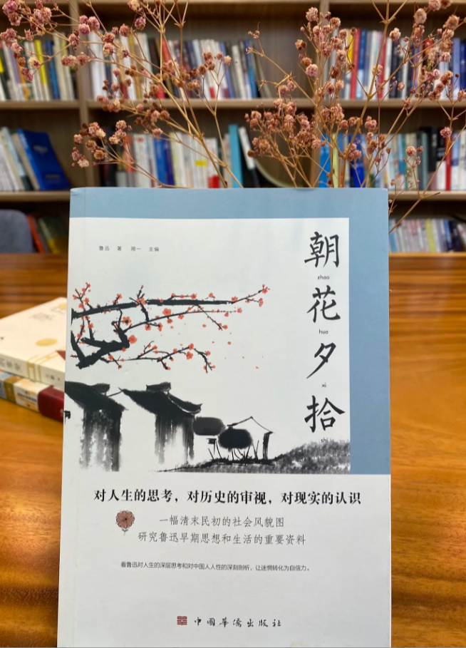

《朝花夕拾》
作者：鲁迅
《朝花夕拾》原名《旧事重提》，是现代文学家鲁迅的散文集，收录鲁迅于 1926 年创作的 10 篇回忆性散文。此文集作为“回忆的记事”，多侧面地反映了作者鲁迅青少年时期的生活，形象地反映了他的性格和志趣的形成经过。
章节列表
请选择一个章节阅读。
作者：鲁迅
《朝花夕拾》原名《旧事重提》，是现代文学家鲁迅的散文集，收录鲁迅于 1926 年创作的 10 篇回忆性散文。此文集作为“回忆的记事”，多侧面地反映了作者鲁迅青少年时期的生活，形象地反映了他的性格和志趣的形成经过。
请选择一个章节阅读。